You already keep a machine on 24/7. Give it one more job. samogrow runs a herb garden from a camera, two smart plugs, and a Claude API key — open source (MIT), no pods, no subscription.
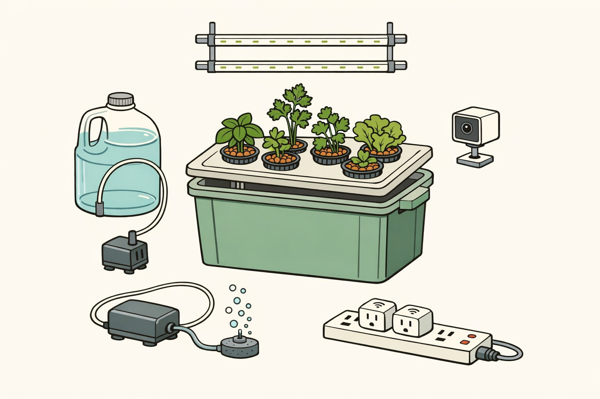
The garden is three off-the-shelf Wi-Fi gadgets — two smart plugs and a camera — with
nothing to maintain. The brain is nombox, a small TypeScript/Bun service
(@anthropic-ai/sdk for vision, grammY for Telegram, everything
in one config.json) that runs on a machine you already leave on: it pulls a
photo, asks Claude what to do, switches the light and pump plugs, and reports on Telegram.
Plain software you can read and fork — no black box. Nombox is the maker; nombox is the
service you'll spot in your process list — and yes, the *box suffix is the wink.
A small program that sends each photo to Claude, reads back the verdict, switches the light and pump plugs, and runs the Telegram bot. It is the only thing you maintain.
Claude reads each photo and returns a structured verdict; Telegram carries the daily digest, alerts, and your commands. Only the still image leaves your network — the camera is local RTSP, no cloud camera account.
Each cycle: the brain grabs a snapshot, Claude returns a verdict, the brain switches the plugs within fixed safety caps, and the result lands in Telegram.
Safety The AI can request water; it cannot override the cap. Per-run and per-day pump caps, a bounded top-up jug (worst-case spill is just the jug's volume), and an optional float/leak sensor.
Senses The camera is the only automatic sensor — the AI's eyes. The EC/TDS meter and pH kit are handheld manual tools: you dip and read them yourself, and the AI only learns a value when you type it into Telegram. Continuous EC/pH/level probes exist but need a microcontroller — a natural add-on to the V5 Pi build, out of scope for the wiring-free versions. One gotcha with cheap TDS pens: the ×10 multiplier — “115 ×10” means 1,150 ppm; missing it burned our first plants, so always relay the true value.
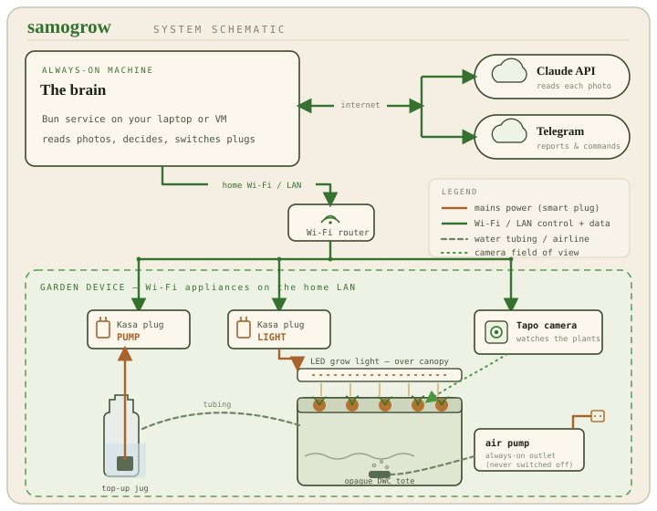
One price frame: ~$255 for the manual build to start, ~$280 for the automated core, up to ~$335 with the water-safety add-ons. That is the same one-time bracket as the no-AI countertop units, while delivering the camera + AI capability that otherwise only ships on a $899 Gardyn with a ~$408/yr subscription.
| System | Hardware | 2-yr extras | AI | 2-yr total |
|---|---|---|---|---|
| samogrow | $280 | $190 | yes | ~$470 |
| Gardyn Home 4 | $899 | $816 | yes | ~$1,715 |
| Click & Grow SG9 | $200 | $400 | no | ~$600 |
| Auk Mini 2 | $229 | $0 | no | ~$229 |
Nothing here is a black box: commodity seeds, code you can fork, and no vendor who can deprecate your garden or move the AI behind a paywall — the way AeroGarden owners were stranded when the company wound down and the app and pods went with it. The two-year math is just the receipt: ~$470 all-in, roughly $1,245 under Gardyn (the only commercial unit with real camera + AI) and below even a Click & Grow.
The API line is arithmetic, not a guess: ~$0.0036 per analysis on Claude Haiku × 24 images/day ≈ $2.6/mo (≈ $5/mo at 48/day).
Every item is ordinary consumer gear — tap a thumbnail to view the source listing, or cart all 10 core items in one ready-to-order Amazon list →
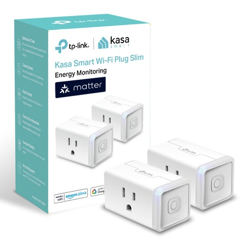
Kasa smart plugs (2-pack)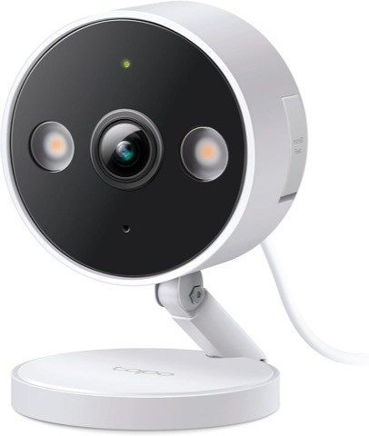
Tapo C100 Wi-Fi camera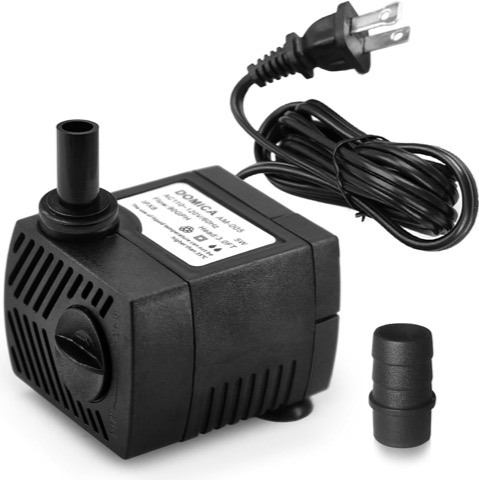
Top-up fountain pump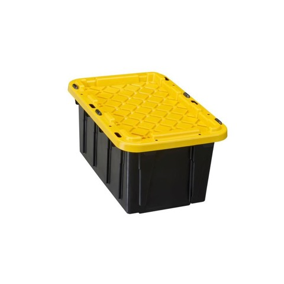
Opaque DWC tote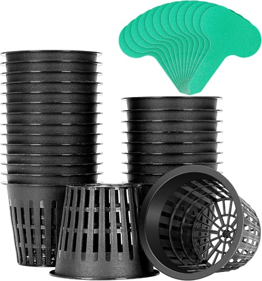
3" net pots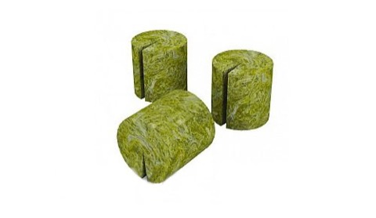
Rockwool starter plugs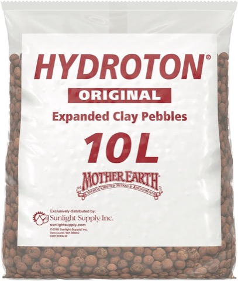
LECA clay pebbles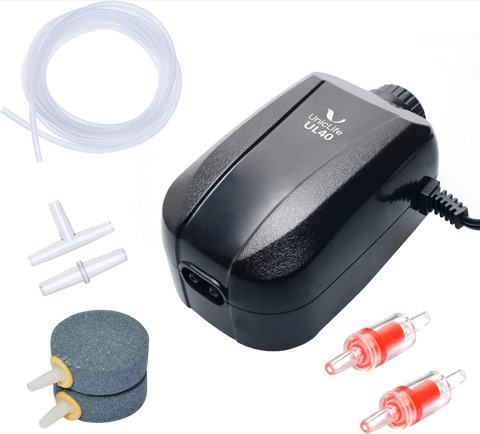
Air-pump kit (stones + tubing incl.)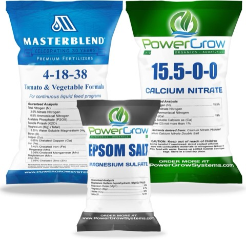
MasterBlend nutrients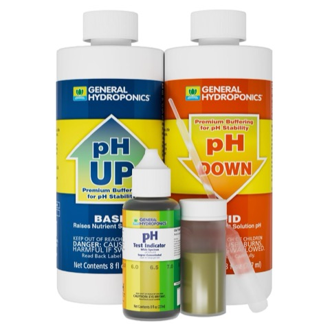
pH control kit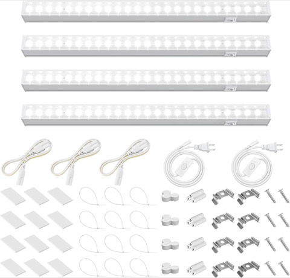
Barrina T5 light strips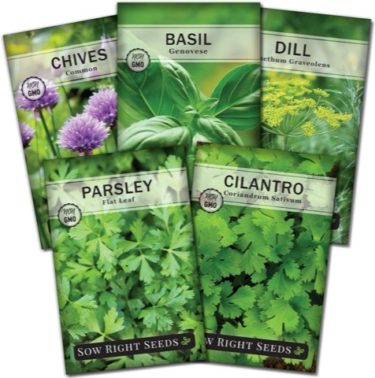
Herb seed collectionPrices are mid-2026 estimates, ±30% with coupons and sellers — verify at the source before ordering.
Mock mode runs the whole loop with zero hardware — real Claude call, real Telegram push, against a sample photo. Clone the repo and:
SAMOGROW_MOCK=1 bun run src/main.ts
Every N minutes it pulls an RTSP still, sends it to Claude Haiku, and gets back typed JSON it can act on:
{ water: bool, light_hours: int, pots: [{id, health}], confidence: 0–1 }
Per-run and per-day pump caps are the flood backstop, backed by a bounded 1–2 gal jug and an optional float/leak sensor. The cap is enforced in code, not by the model.
A daily photo + health note, inline “Water now / Report” buttons, and ad-hoc questions from your phone. The bot obeys only your chat ID.
Want to try the software right now, before any parts arrive? Jump to step 3 — it runs the whole loop on your laptop with zero hardware.
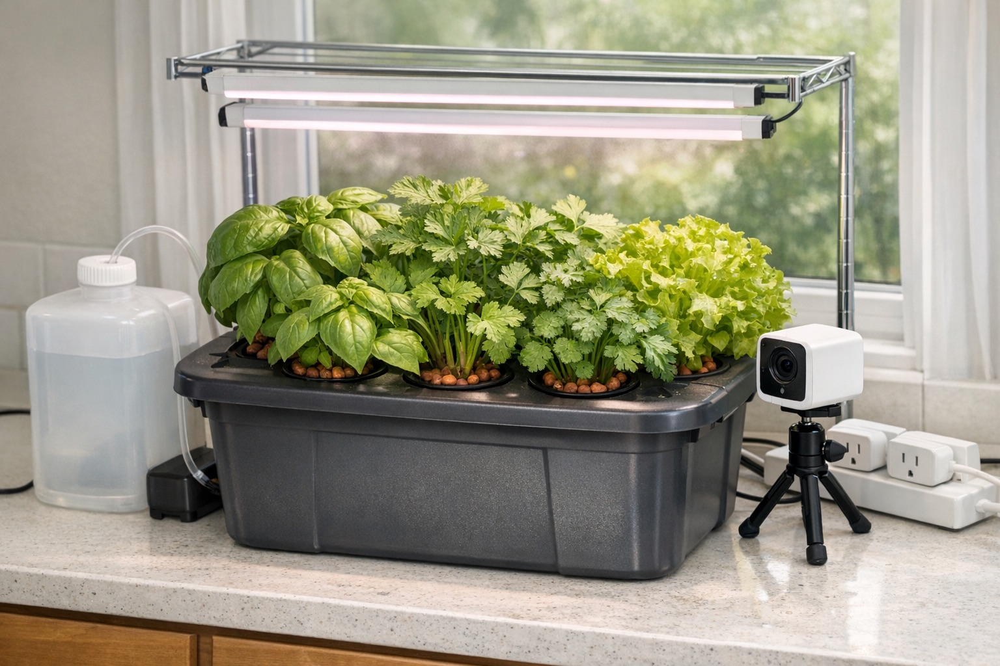
Fast path: all 10 core items are in one Amazon list — one click to cart the lot. Grab the tote and 2–4 healthy potted herbs (basil, parsley) locally from a garden center, ~$4–5 each — they're your day-one plants (no shipping wait).
Nest each root ball in a net cup of clay pebbles, fill the reservoir, and you have a good-looking, working garden the same day — no germination wait. Heads up before you drop a plant in:
Get the program running on your computer and connect the Telegram bot, then test the whole loop against a sample photo — no devices needed yet.
Get the plugs and camera onto your Wi-Fi, aim the camera over the canopy, point the software at them, and set it to run on its own and restart itself.
Cheaper / from scratch Prefer to grow from seed? Same build, lower cost — you just add ~2–4 weeks of germination before there's anything to transplant (parsley is the laggard at 10–28 days: soak 12–24 h, sow into moist rockwool, keep it warm). Garden-center pots beat crammed grocery “living herb” clumps; if you use those, split them gently.
Harvest Transplanted basil and mint are cuttable within days once they settle — expect a few days of transplant shock first. Parsley is the patient one. Lettuce bolts when it gets too warm.
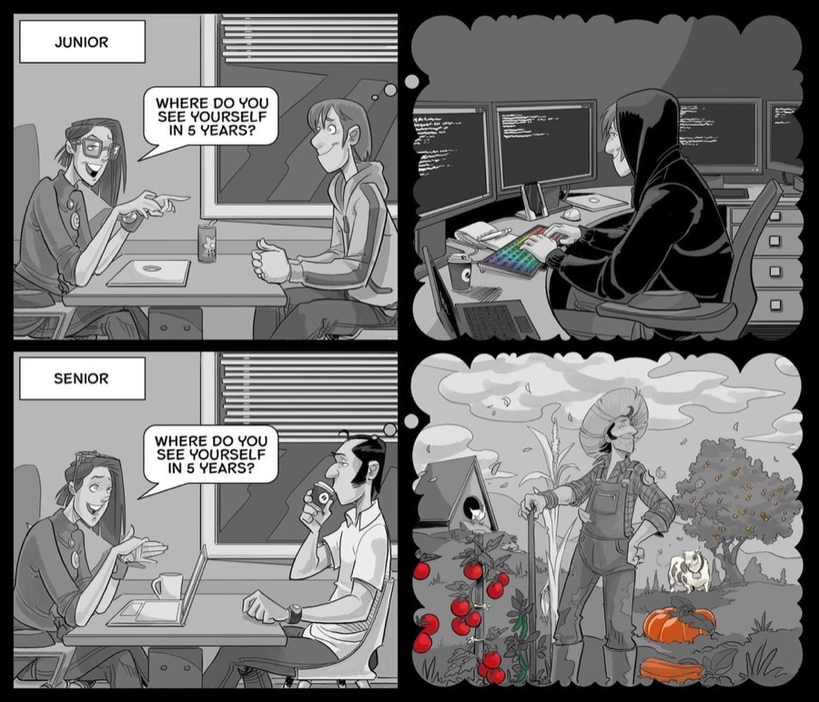
“Where do you see yourself in 5 years?” The junior wants the battlestation; the senior wants the farm.reddit · unknown artist ↗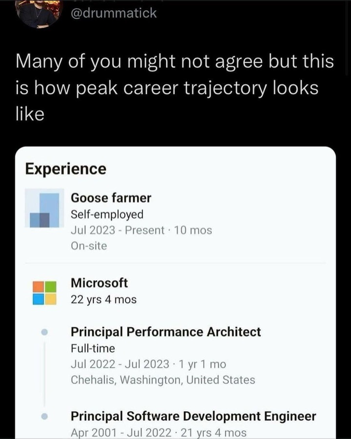
22 years at Microsoft, next role: “Goose farmer.” The story the internet turned into a meme.@drummatick · via @nixcraft ↗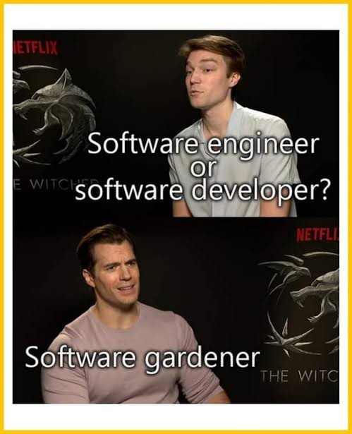
“Engineer or developer?” — the correct answer: software gardener.Witcher cast interview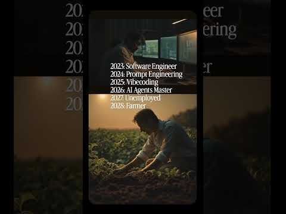
The engineer-quits-to-farm bit, in short form.youtube.com ↗ Instagram reel ↗ Another take on trading the IDE for a field.instagram.com TikTok ↗ The same daydream, set to sound.@eliana_codes r/ProgrammerHumor ↗ “Seriously” — the thread where everyone admits it.reddit.com Why programmers want to farm ↗ “Gardening is the exact opposite of coding.” The essay that names the whole phenomenon.EngineerDog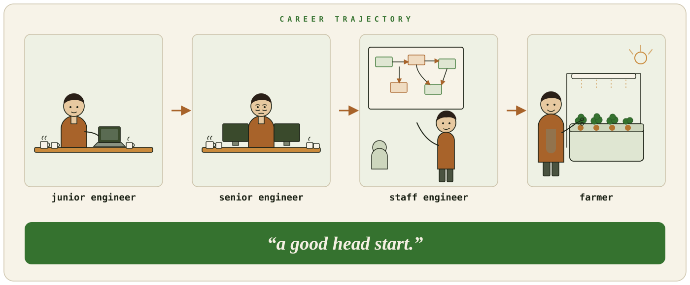